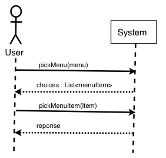

I am still a bit confused on GUI modeling. For example, if a GUI has a drop down menu of choices, how is the choice that the user makes represented in an Interaction diagram?
The precise UI code is determined by your platform. It may even be documented using a UML
interaction diagram.
When I'm working on a design, I abstract away from the platform to focus on the logic.
Here is the scenario you mean (I guess):
- The user selects the menu and the system shows them a list of choices.
- The user looks at the list and selects one.
- The system does the selected action...
Translated into messages in a SSD:

Next step is to use GRASP to design the detailed interactions.... Exercise?
Was there a common mistake among all the groups concerning Interaction Diagrams and DCDs that should be avoided?
Doing too much in one diagram: Trying to put a whole scenario into one interaction diagram
rather than the responses to each message in turn in separate diagrams.
Another common error is having too many DCDs... You should have one DCD for many different interaction
diagrams.
When you have more than 20 classes and the DCD is too big to fit on poster
or board.... then you must collecting the classes into
logical groups and draw each package as separate diagrams + a package diagram showing
the dependencies between the packages. We don't have much time to discuss this, this
quarter.
Start to control the complexity by splitting the classes into layers: UI vs Domain
vs Services.
We mention this in CS202 and talk a lot about it in CS320 (Advert).
It is a long explanation.... but vital to understanding the Zen of Objects.
A binding is a connection between a symbol and a value. Computer programs are full of them. If they
are computed by the compiler and/or linker then they are
Static Bindings
but if they can be changed as the program runs they are called
Dynamic Bindings
instead.
Example: When you declare a local variable
double x=5;
then the type of the variable x is
bound
to the type double. In C++ you can not change the type so it is statically
bound to x. The value of x is 5, but this is dynamic. You can change it as the program runs.
Life gets more interesting when you have objects and pointers to objects. The objects
have a static type. But the pointer can point at objects of different types. And the
type of object you point at, within limits, can be changed as the program runs. As a result
the type of the object we point at is dynamic. The limit, with objects, is that a pointer
can only point at objects that are derived from the type that is declared:
General * p; // General has a two derived special types: Special and SuperSpecial
p = new Special; // p refers to an object of type Special.
p = new SuperSpecial; // p refers to an object of type SuperSpecial.
Now, what happens if we write
p->something() ; // call the something() function
when we have something() declared in General, Special, and SuperSpecial???
Answer: if "something" has static binding then you get
General::something()
but if
it is dynamically bound, the running program can give you the General, Special,
or the Superspecial version of function something() depending on what p is
pointing at..
Dynamic binding gives us polymorphism.
Are there ever cases, perhaps with extremely small programs, where there is only one controller?
Yes. Lots. Indeed most programmers cheerfully put everything in a single controller class. This
starts out OK, but as the program grows -- and all useful programs grow.....
As the bloated termite said when we left Noah's Ark: " I can't believe I ate the whole thing".
So.... A single function program, with simple data, and few external interfaces or data bases.....
put it in a single controller.... and REFACTOR the moment things get complicated. You are
accumulating
Technical Debt
with each added function in the small project.
As I was reading through chapters 15 and 16 again I noticed that the section on user-defined compartments did not have much information. When would it be a good idea to include user-defined compartments in a class box, and what would generally be put into those compartments?
There isn't much you can say about what individuals and teams will do to add new compartments. Perhaps
a list of responsibilities? perhaps a list of authors? .... Actually it is better to
record authors as tags: {author=RJB, email=rjbotting@csusb.edu}. Similarly variations
in meaning should be written as stereotypes.
SO my advice... don't add compartments.
Can you explain active class / active object? The book doesn't explain that very well.
An active object has an independent thread of control or else it runs on a
different central Processor. In other words it is doing it's own thing,
and you send it messages which it may or may not ignore. Not elementary
programming. Easiest in Java.... but tricky anyway.
There is no special way to show a data base in the UML.
It depends on the diagram and whether you are using the class or implementing it.
If your software uses a preexisting library of classes for handling a SQL database
then you can show in a class diagram if you like. You should show the data base as
an actor (in a box) in a use case. You may show an object in the SQL class
in an interaction diagram and add a comment. You could also name it
like this
sql : SQL::classname
and use it to show how it is used. Another option (not one I've seen) is
to show a "lost message" that leaves the calling objects and goes to a black dot.
If you are writing a class that uses SQL to access a database then you show the
data base as an actor in a use case diagram. Put the SQL classes in a Technical Services package (keep things tidy!). Show the class in Design Class Diagrams and objects
of that class in interaction diagrams. You would be wise to create a Facade to hide the SQL.
Object Oriented Database came up once before and once again in chapter 38. Can you give more details about this type of database.
Sorry, no. Not part of this course and outside my knowledge.
does a web project have a state machine? since processes are only activated when a request to the server is sent.
Most experts in web design use a state machine to document the states a session
can be in -- basically one state per page. Clicks and user actions are events
that change the state. This is non-standard, optional, but helpful.
Is it a good idea to include notes on diagrams containing code? (i.e. page 367)
When the code says something useful/valuable it is a good idea. For example --
you have to explain to
a team member a particular coding trick. Or, for example, you want to
document how to use a class that you have invented or found in an existing
library.
Are there any Grasp of Four patterns you have found to be extremely useful and actually said "hey lets use a adapter in this situation, it would be perfect!" or is it more of a thing that will normally just kind of happen while creating UML and doing the UP?
(1) There are no "Grasp of Four"! Exercise -- what is the correct term?
(2) I have always found the "Protected Variations" GRASP extremely useful. For 40 years....
(3) These days I tend to work with computer languages, and these demand the Composite GoF pattern.
(4) In Java you will be using Singleton's all the time -- lots of "getInstance()".
(5) the half a dozen GoF in Larman are probably the most useful.
The GoF tend to pop up as a solution to a knotty design problem -- whether or not you use the UML or the UP.
This chapter focuses on conceptual classes as oppose to software classes. Will most of these classes become software classes?
I hope so. However, learning about the domain is itself a worthwhile
activity, even if it turns out that some classes are not reflected
in the software.
One reason why Larman in the UP delays Business or Domain Modeling is so
that you choose the classes to model using the use cases. This means you
are almost certainly going to use them in a DCD(Design Class Model).
What is the difference between aggregation and composite aggregation?
We discussed this complex and messy in
[ 11q.html ]
and in
[ 18q.html ]
That was in last years CS375 not this one. Sorry!
In this chapter the author says that non-functional requirements are given thorough attention more than the functional ones. Why would this be the case?
Basically Larman has put of the tough part until now. This is the
chapter where most of the advice on architectural design is discussed.
And architectural design is about special non-functional requirements. The rest
of the book is about meeting functional requirements. In
those parts of the book the only non-functional requirement is implicit:
trying to preserve the programmer's sanity.
Are there other techniques we can use in order to achieve a separation of concerns?
The term comes from accounting.
Discussion: how many different ways can you think of for making
sure that two different requirements or design decisions don't
end up in the same piece of code? (Check the patterns
and principles I've listed on this site).
How difficult is it to incorporate evolution points as they arise?
Some changes can have a wide impact. Some effect only one method in one
function in one class. The ideal architecture should let changes effect
only small am mounts of code. However, usually, you don't know the
ideal architecture until after the changes happen, so you work
harder than you might want. Spotting an evolution point -- a hot spot
for change early in the project can give you a more robust architecture
that focuses change into small pieces of code.
Dr. Botting can you give a clear explanation of Facade and Facade Pattern? please.
You need to use some classes -- example to help your software access a data
base. You hide the complications of doing this inside classes that you
write.
The classes you write provide a simpler way to access the data base. The
rest of the program uses the simpler functions.
The simpler classes are called a Facade -- the curtain that hides the details.
Consequence: technical details of the data base are separated from the
problems of the domain. This is good.
In this case the Facade would be put in a Technical Services layer.
You can put a Facade around any complex subsystem in your software. It is an example of using GRASP "Indirection". Such Facades belong in other layers.
In an inter-layer and/or inter-package interaction scenario what determines
an architecturally significant scenarios.
I guess experience counts! You don't need this knowledge for this class.
A scenario is significant if it forces a particular structure. So you look
for scenarios that involve classes in many layers. You want to explore
requirements that lead to calls to functions in classes from the user
interface level down to technical services.
Can you explain in better detail the difference between simple packages and subsystems?
Not really -- and it is not two important for this class.
But when you have a set of classes that all use each other and are all
about the same thing, and their objects have lots of interactions... then
this is a subsystem rather a package. It is a matter of coherence. How
closely are things stuck together by the solutions that they encode.
So when we use a package diagram do we also need a counterpart IE, interaction diagram and where does the deployment diagram fit in?
Personally I'd only show interactions between packages when you have an audience
who are likely to be unable to see what the dependency arrows mean.
Deployment is for explaining the hardware and software you are using. Only needed
if you are doing something out of the normal box.
in what situations is logical views of architecture more convenient to use than Process and Deployment views of architecture?
It is not a matter of convenience. Mostly you will need both: deployment
defines your platform and the logical architecture the structure of you
software.
However, if there is only one program running on a plain vanilla PC
then the deployment diagram is almost worthless. And if the program
only has 2 or 3 classes then packaging them doesn't seem worthwhile either.
How can layers affect performance?
It takes time to call a function. Suppose we have 26 packages called
A, B, C, ... Z. If A::a() calls B::b() that calls
- C::c() that calls.... Z::z() then you have 26 function calls. However
- if A::a() just calls Z::z() directly it only takes 1 function call. This
is 26 times faster.
As a rule -- don't worry about this unless tests show that the
software performs badly. Much time has been wasted by programmer
doing "premature optimization" -- improving the speed of
parts of the software that don't effect the whole.
What is polling?
This is a technique that was originally used in hardware. One part
of a system needs to know when some event happens. So it repeatedly asks
"Has it happened yet?".
Think of a child on a road trip: "Are we there yet?"
can you go into more detail about "pull-from-above" or "polling" and
"push-from-below"? I am unclear on their uses and purpose.
Software is easier to develop and maintain if it is organized
so that the dependencies don't form cycles: A::a() calls B::b()
- which calls C::c() which calls A::a2(), for example. Now we should place
A above B and B above C because that is the direction of calling -- but
C also calls A -- this is therefore
push from below.
One solution is to refactor... for example does a2() really belong in
A or should it be moved to package C? This can move hole classes
from one package to another! For example you might start a design
with an SMTP server in the User Interface layer because is is
an actor in the use case. But the logical architecture starts to look
messy so you move the SMTP handling classes done into
the Technical Service layer. The design becomes a lot
cleaner.
Another solution is to create a low level interface for A (call it I)
- that contain I::a2(). Then make A::a2() implements I::a2() and
- C::c() calls I::a2(). The interfaces decouples the two packages.
- A neat variation is for A::a to pass a an object callback that
- implements the interface I::a2() down to C -- and C::c() calls it
to signal the event.
However, you can sometime reverse the direction of call. Suppose
- that C::c() calls A::a2() to tell A that something has happened or
to pass A some data that it needs. Instead we can write a function
- in A that calls a function C::c2() that gets the data from C (
pulling from above
) or
finds out if the event has happened (
polling
).
A lot of this looks the same as the logical architecture we've done in our
first iteration. Is this more of a reminder to make sure our previous
architecture diagrams are up to date? Further, how should the architecture
in this iteration differ from the previous iterations architecture?
Yes: this is a review.
In theory (and I hope in your future practice) logical architecture should be
pretty stable after the first two iterations because you should use
the first few iterations to test it out.
Architecture changes when some thing unexpected happens: a new
wide ranging requirement: example -- no SSNs will be used any more.
The other tectonic event: change of hardware or platform.
When should interaction diagrams denote package information? Would not class diagrams be a better location for communicating 'cross boundary connections' between packages?
This is right: use packages to keep complexity under control and use
a package diagram to show what you're doing.
But once a class is put in a package then its name in other diagrams
changes.
If you omit the package names from interaction diagrams you don't know where
to find the classes -- who said the names were different? Each package is
a namespace.
Please explain "layer patterns" in greater detail and give some examples of how to apply them?
Over the last 5 years people have learned that it pays to put
certain types of classes into a "layer". Layers separate classes
that shouldn't get muddled up with each other. For example all
the classes that are inspired by the domain model form a "layer".
All the classes/code describing the "look-and-feel" of the user
interface form another famous layer -- and every body agrees we
don't want to muddle up the user interface with the "model". Another
classic layer: persistence. These classes handle the data base (and/or files)
that preserve data between runs of programs. Again it makes life
simple if the domain does not have to worry about the kind
of data storage you are using and vice versa. The book has an
excellent picture of the classic architecture: Use it.
Is the three tier architecture what we call today MVC?
Yes -- the three tiers evolved from MVC and are a popular way to implement it.
Why do SSDs illustrate the system operations, but hid the UI objects?
Because Larman says so!
Also because this is not a book about how to use the .XXX library of
language YYY with OS ZZZ.
What kind of coupling is noteworthy? The coupling diagram showed in our book is so messy,I don't think it can help me understand better.
Coupling is by definition messy -- and makes the software hard to understand.
This is why we try to reduce it. In diagrams the arrows are warnings to the
programmers to be careful.
TBA
What would be some of the benefits of having a non-layered architecture? It seems to be more of a death trap than anything else.
Non-layered architecture is a booby trap. Good for a simple program. and
hatches a disaster as the software grows to meet new technology and stake holder's
needs.
When is it appropriate to use the refined logical architecture over a regular package diagram?
Large pieces of software.
Can you explain in detail what Relaxed Layered Coupling is?
It just means that your upper layer classes can skip layers. I think it
is harmless and common. What ever the theorists say.
On page 309 the books states that it assumes we are familiar with Swing. Chapter 34 talks about Swing. I am not familiar with Swing, can you elaborate?
Swing is just a collection of classes that helps a Java programmer define a
user interface. You don't need to know about them for this class. The
Wikipedia
[ Java_Swing ]
has a good general discussion.
In Chapter 34 actually hides the SWING library behind the ProcessSaleFrame
class, or a couple of other similar classes.
Aren't architecturally significant scenarios like a detailed use case but drawn like Figure 34.4 on page 564?
That is no scenario, it is a sequence diagram.
Scenarios are lists of user actions. The figure shows one user action and
a ton of internal message passing.
Message
Could you go over the use of Observer in upward collaboration and what exactly is a PropertyListener?
I've just signed up to the UML discussions Google group.
When messages are sent to this group I get Email telling me about them.
Years ago I joined the Math-thinking mailing list. And so on. To do this you
have to have your EMail address validated so that the mailer can send you the
messages. Then the mail server adds you to a list of people
who get the messages. It relies on me having a valid address. I rely
on it to send me the data I want as it happens. I am an
EMailListener, you might say. I am an observer of events by Email.
I get the info but I am only loosely coupled to the rest of the group.
When we need information to flow in the opposite direction to the planned dependencies
-- for example we want a value calculated in the domain layer to appear
in a form/web page -- then we reduce the coupling by programming the
upper objects/classes to listen in the lower levels -- using Observer.
This means that the listening class must declare its capacity to listen. This
is done by implementing a particular list of functions -- a particular
interface. So if there is a property Listener interface then a class
becomes a Property Listener by implementing that interface. In C++
class ImAListener : public IPropertyListener { ... }
The compiler checks to see that the class fulfills its promise. The
objects of the class can be sent messages about the property being listened
for.
In the domain we keep a list of objects that are interested in the changes.
All we need to know is that they implement IPropertyListener. We provide
a couple of functions that add and remove IPropertyListeners from our
list. When the property changes we send the message with the new data...
An object that implements IPropertyListener can add itself to the list
and so receive notifications.
.Chapter 34 pages 576 -- Upward Communication
On page 576, a UIFacade is added to the UI layer to add indirection to the GUI objects. Since it is not a part of the "physical" UI, it seems to me that it fits better as part of the domain layer--especially since one of its main purposes is to act as a controller for domain objects. What am I missing?
I think you've got it. This Facade -- like all Facades -- lies
on the fault line between two packages. It could be put in either the
package that it provides access to it or in the packages that use it.
And now you see why we can't put it in with the "users" packages -- there
may be more than one. Also a Facade is more heavily coupled to
the package/system that it "protects" than its users. So we
put it, in this case in the UI package.
The Book says that a facade does not normally do its own work. Does that mean there are times when it does its own work?
I guess so.... but I don't like it. I think Facades should be thin.
Is the application layer optional?
Yes. Use when you have many controllers.
Different layers should be simple and understandable so why are fuzzy set terms used by different development teams?
Larman is using the term "Fuzzy Set" as a metaphor. He means that sometimes
it may not be clear where a class belongs in the layers. In this case it
is better to proceed as if it was in two packages than to freeze the
project in a big row about the correct place.
Can you give an example of how packages work?
How software is organized depends on the language. It also doesn't
become critical until you have a large piece of software. So which bit of
enormous code do you want to see, and in what language? I have a couple
large systems written in C (not OO but well organized).
In C++ we use three techniques: split source code into files and use
independent compilation, separate files into directories, finally, and new,
we place different classes and functions in separate namespaces so that
we can use the same names for different purposes.
In Java you use: files, directories (on the Internet), and the "package"
declaration.
Idea: code that implements things in different packages should
be placed so that it doesn't interfere.
How important role does local caching play in NextGen requirements?
In computer science, local caching is a technique for making a program run faster by
sing the principle of locality. For example keeping a local copy of recent
data in a CPU. Another common example in an operating system is keep pages
in RAM until they have to be copied to disk. Finally in a network
we often maintain local copies of data on several nodes -- the Internet
DNS system uses this to speed name servers.
Keeping a local copy of important data in a distributed system also improves
reliability -- if the network goes down you still have the data.
I'd say that these principles apply to NextGen: local caching will
improve reliability and speed -- given careful design.
It also makes a nice example for some GoF patterns.
Why is it a good idea to reduce widespread dependencies?
A widespread dependency means that a small change can have widespread consequences.
Change this class and you'll have to fix bugs in a dozen other places for example.
What are other examples of frameworks besides the Java's Swing framework
Microsoft .NET has some... I found a couple of dozen at
[ Framework ]
on the Wikipedia.
Symptom: interfaces and abstract classes -- you have to supply the functions
that the framework names. The framework supplies some functions and
you provide others.
I am unsure on when to use the 3D box and when to use the 2D box that we
have been using, and also what it would mean to switch to two.
Some cases are simple: hardware is 3D, your code is 2D. Example
the users PC.
Similarly any piece of software that interprets code is 3D. Example
the server's OS and the user's JVM.
If it is not hardware and it doesn't interpret, run, or execute
code it is an artifact -- 2D.
In a deployment diagram, can a device node ever appear inside an execution
environment node?
I can't see how! This would imply that a piece of software is interpreting
some hardware! Normally it is the other way round.
The norm is: hardware executes software.
However -- an execution environment can communicate with hardware --
but that means the device is OUTSIDE the execution environment box.
What makes a Deployment diagram different from a Component diagram?
A component diagram shows how software components are connected. A Deployment diagram
shows how hardware components are connected (and some software).
Components have a special icon in their top left hand corner and use a
lot of lollipop connectors.
YAGNI in the final.
Other than server software requirements (I.E. Widget server only runs on Windows server 2003) are there any other reasons the OS would be shown in its own box and not using {OS=*}?
No.
How much detail can, or should go into The software Architect documentation?
Enough detail to explain the problem or concern and to make it clear
why your proposed solution is a good way to do it. Not in the final.
Why is it important to create a SAD.
I'll never forget a graduate student in England who was working at the
Rutherford labs.... "What I really need is this programmers waste paper basket!".
You need to document why you chose a particular solution, and why you
rejected other solutions.
The document also improves the chances of getting a better solution.
To be brutal: every problem has a obvious solution that just doesn't work.
The SAD forces you to sweat the details and get a solution that will work.
Is there ANY WAY to avoid using packages? I don't like them!
The only alternative is to keep every program you write small:
no more 200 lines and no more than a dozen classes.
That way you end up with a thousand programs and problems with
how they interact.
Packages are like tectonic plates. They allow a certain amount of sliding
and shifting but you hope that there won't be any big shifts.